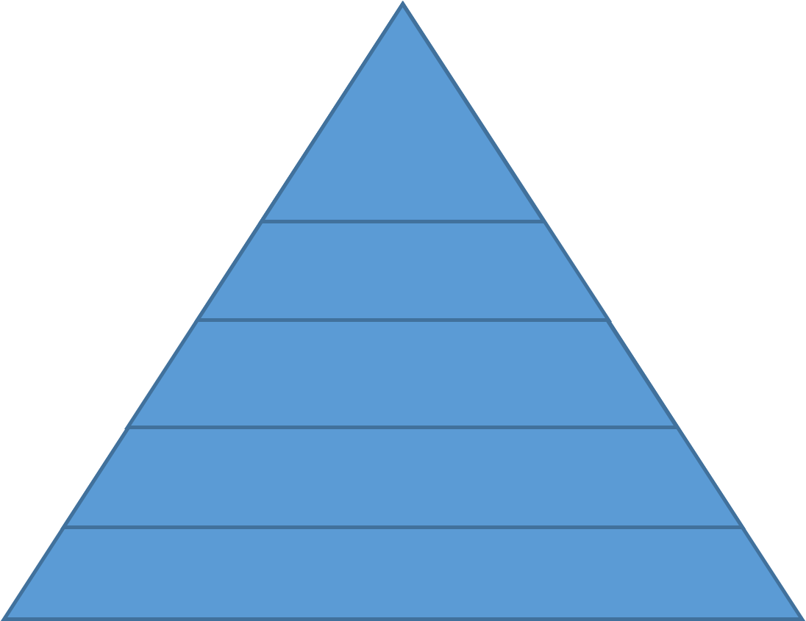

Data Curation
for liaison librarians



“Information is not knowledge.
Knowledge is not wisdom.
Wisdom is not truth.
Truth is not beauty.
Beauty is not love.
Love is not music.
Music is THE BEST.”
― Frank Zappa
Knowledge is not wisdom.
Wisdom is not truth.
Truth is not beauty.
Beauty is not love.
Love is not music.
Music is THE BEST.”
― Frank Zappa
Data?
Numbers
Words
Citations / references
Notebooks / marginalia
Specimens
Field Samples
Images
Videos / sound recording
Relationships
Models
Code
Data?
“Examples of Research Data and Materials include laboratory notebooks, notes of any type, photographs, films, digital images, original biological and environmental samples, protocols, numbers, graphs, charts, numerical raw experimental results, instrumental outputs from which Research Data can be derived and other deliverables under sponsored agreements.”Johns Hopkins University (2008)
http://jhuresearch.jhu.edu/Data_Management_Policy.pdf